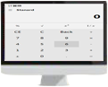
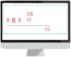

胡瑞娟
前端工程师
The font-end engineer
- 意向职位:
- Web前端开发
- 期望待遇：
- 面议
- 工作经历：
- 两年以内
- 教育经历：
- 河南工程学院
- 专业：
- 电气工程及自动化
- 学历：
- 本科
- 出生日期：
- 1988年6月20日
- 目标城市：
- 郑州
- QQ:
- 741809883
- 电话：
- 150 3828 7145
- HTML
- CSS
- JavaScript
- jQuery
- Bootstrap
- Less
- Vuejs
hruij@foxmail.com
github.com/juanjuan222
www.jianshu.com/u/747a504b2308
掌握技术
- 熟悉HTML+CSS布局，遵循W3C规范，编写有语义化，模块的页面代码
- 熟悉JavaScript、jQuery,实现日常交互效果
- 熟悉Ajax工作原理和实现方法，了解HTTP协议
- 熟悉使用Git、Emment、Markdown等前端开发工具
- 了解Bootsrap、Vue等常见前端框架
- 了解RequireJS、Gulp构建
- 熟练使用Photoshop设计、切图、像素级重构
项目经历
仿京东页面
简介：高度还原京东商城页面，实现像素级重构
主要运用技术：html+css、jQuery- 
模仿Windows10计算器
简介：模仿Windows10计算器实现Standard、Science、Programmer三个版本。
主要运用技术：html+css、jQuery- 
音乐播放器
简介：依赖百度音乐库资源，支持播放/暂停、下一曲、调节播放进度、单曲循环、随机播放
主要运用技术：html+css、jQuery、Ajax轮播插件
简介：面向对象的轮播插件，代码清晰，实现可复用性，不依赖CSS
主要运用技术：jQuery